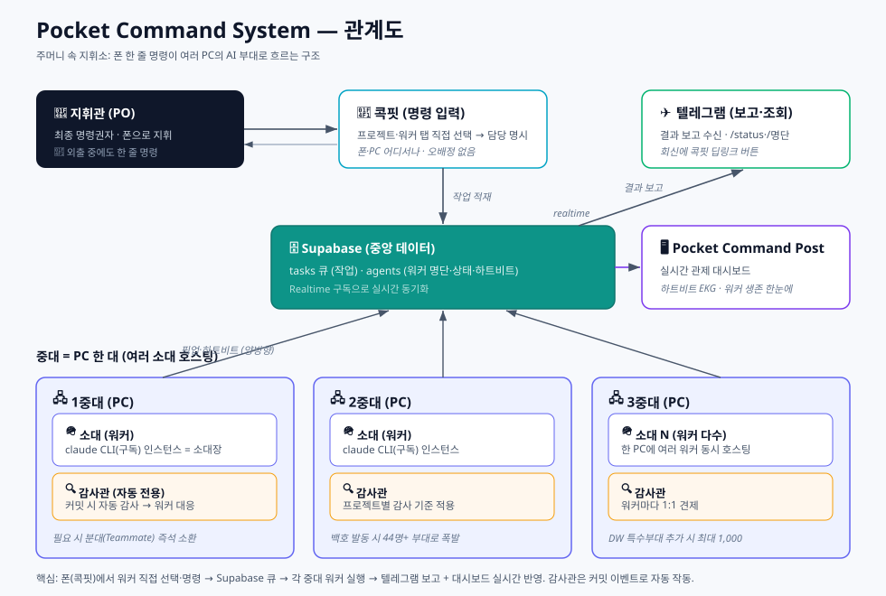
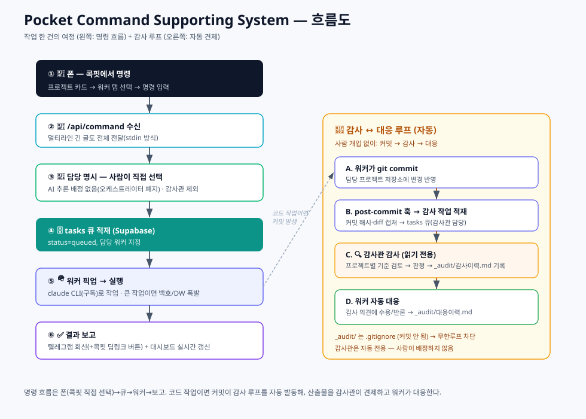
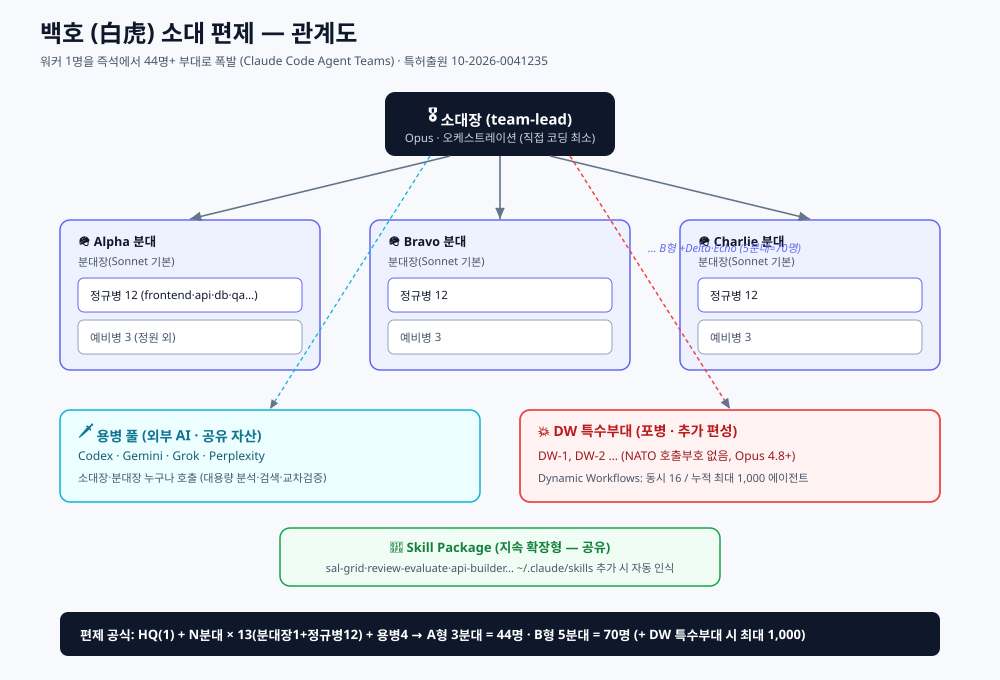
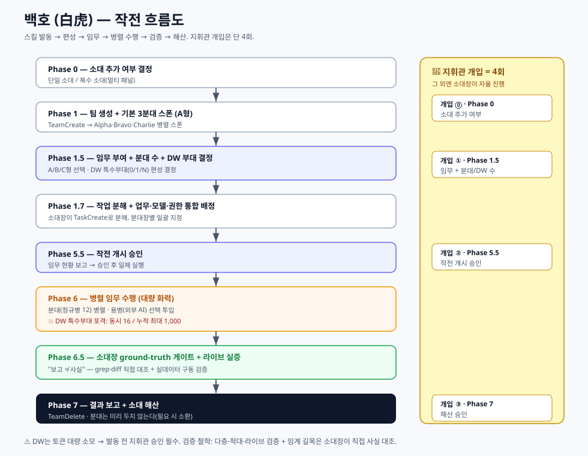

개요 — 한눈에
입문자용 · 주머니 속 지휘소
어떤 문제를 푸는가
AI(클로드 등)에게 일을 시키려면 보통 컴퓨터 앞에 앉아 화면을 켜고 채팅해야 합니다.
- 외출 중엔 일을 못 시킨다.
- 한 번에 한 가지 대화만 붙잡고 있어야 한다.
- 컴퓨터를 여러 대 두고 동시에 굴리기 어렵다.
Pocket Command System은 이 셋을 뒤집습니다.
- 폰만 있으면 됩니다. 텔레그램으로 "○○ 해줘" 한 줄 보내면 끝.
- 일은 백그라운드에서 알아서 돌아갑니다. 던져놓고 다른 일 하면 됩니다.
- 일꾼(워커)을 얼마든지 늘릴 수 있습니다. 늘릴수록 처리량이 커집니다.
무엇이 다른가
| 보통의 AI 사용 | Pocket Command System |
|---|---|
| 컴퓨터 앞에 앉아야 함 | 폰에서 지시 |
| 한 번에 한 대화 | 여러 일꾼 동시 가동 |
| 사람이 매번 시켜야 함 | 이벤트로 자동 작동(예: 커밋되면 자동 감사) |
| 결과를 직접 확인 | 텔레그램 보고 + 실시간 대시보드 |
| 일 시키고 검수도 사람이 | 감사관 AI가 자동 검수하고 일꾼이 답변 |
핵심 개념 — 군대 편제로 이해하기
| 편제 | 정체 | 설명 |
|---|---|---|
| 지휘관 | 사람(PO) | 최종 명령권자. 통수권자. |
| 참모장 | 오케스트레이터(클라우드) | 지휘관 대신 임무를 배정·조율. 직접 일하지 않고 "누가 할지"만 정함. |
| 중대 | PC 한 대 | 여러 소대를 호스팅하는 물리 컴퓨터. |
| 소대 | 워커 한 개 | 실제로 일하는 AI 인스턴스(소대장). |
| 분대 | 소환된 팀원 | 소대장이 필요할 때 즉석 소환하는 임시 조력자. |
| 감사관 | 검수 전용 워커 | 특정 워커의 산출물을 자동으로 감사하고 의견을 냄. |

어떻게 동작하나 — 작업 한 건의 여정
[폰: 텔레그램] ──"알파, 리포트 뽑아줘"──▶ 참모장(오케스트레이터)
│ "이건 알파 담당"
▼
작업 큐 (중앙 DB)
│
각 PC의 워커가 큐를 확인 ──▶ 해당 워커가 픽업·실행
│
결과 ◀── 텔레그램 보고 + 대시보드 갱신
- 사람이 텔레그램으로 명령을 보낸다.
- 참모장이 명령을 읽고 적합한 워커에게 배정한다.
- 배정된 워커가 자기 PC에서 작업을 실행한다.
- 결과를 텔레그램으로 보고하고, 대시보드(Pocket Command Post)에 실시간 반영.

주요 기능
- 폰 우선(Phone-first) — 텔레그램이 입출력 채널. 긴 글(문단 포함)도 끝까지 전달.
- 수평 확장 — 워커 추가 = 등록 한 줄 + 프로세스 하나. PC를 더 붙이면 또 확장.
- 실시간 관제 — 각 워커의 생존(하트비트)을 심전도(EKG) 그래프로 표시. 살아있으면 파형, 끊기면 평탄선.
- 자동 기동 — PC를 켜고 로그인하면 그 PC의 워커들이 자동으로 살아난다.
- 감사관(Auditor) — 워커별 자동 검수. 프로젝트마다 감사 기준이 다르다.
- 감사 ↔ 대응 루프 — 감사 의견에 워커가 자동 답변하고 기록을 남긴다.
- 안전장치 — 감사관은 자동 전용(사람이 못 부름), 감사 기록은 커밋되지 않아 무한루프 방지.
★ 특별 기능 — 백호 소대 편제 (대규모 AI 동시 투입)
워커 하나를 순식간에 수십 명의 AI 부대로 폭발시킨다
핵심
소대(워커)는 Claude Code 인스턴스 = 소대장. 여기서 백호(白虎) 소대 편제 스킬을 발동하면 그 소대장 하나가 즉시 44명 이상의 AI 부대로 확장된다 — 소대장 1 + N개 분대 + 용병 + 스킬 패키지.
구성 (편제 공식)
- HQ(소대장 1) + N개 분대 × 13(분대장 1 + 정규병 12) + 용병 4 + Skill Package(지속 확장)
- A형(기본, 3분대) = 44명 · B형(5분대) = 70명 · C형(6분대~) = 그 이상 (예비병 분대당 3명 별도)
- 용병 4 = Codex·Gemini·Grok·Perplexity (외부 AI 공유 풀)
★★ 특수부대 DW(Dynamic Workflows) — 추가 편성
기본 분대(A형 44명)는 그대로 두고, 그 위에 DW를 추가 편성하면 동원 규모가 다시 폭발한다(보병 옆의 포병).
- DW 엔진 1기 = 동시 16 병렬 / 누적 최대 1,000 에이전트. DW 부대는 N개까지 편성 가능.
📜 백호 소대 편제는 특허출원 — 출원번호 10-2026-0041235 (출원일 2026.03.07).


비교 — Hermes Agent와 Pocket Command System
Pocket Command System은 잘 알려진 에이전트 하네스 Hermes Agent(NousResearch)의 설계를 출발점 삼아 만든 Claude Code 네이티브 재구현이다. (성능 벤치마크 측정이 아니라 공개 자료 기반 설계 비교.)
공통 토대 (헤르메스가 원조, 우리도 채택)
- 멀티 워커 + 오케스트레이션(
role="orchestrator"자식이 워커 스폰) - 공유 작업보드(헤르메스 Kanban: 작업=DB행, 워커=독립 OS 프로세스) — 우리 Supabase
tasks큐와 동형 - 멀티호스트(6 백엔드: local·Docker·SSH·Daytona·Singularity·Modal)
- 다채널 메신저·상시 가동·스킬·스케줄(cron)·DAG 작업 분해·전문 역할
헤르메스가 더 성숙/우위인 축 (정직하게)
- 영속 기억 + 자기 학습 루프(execute→evaluate→refine + 크로스세션 회상)
- 다채널 20+(Discord·Slack·WhatsApp·Signal·Email) + 음성 메모 자동 전사
- 경량·이식성($5 VPS 구동) + 보안(self-generated skills로 공급망 차단, CVE 0) + 오픈소스(MIT)
Pocket Command System의 실제 차별점 (좁지만 분명)
- Claude Code 네이티브 대량 폭발 — 백호(완편 44) + DW(최대 1,000)로 단일 명령을 군단급 전개. Claude 전용 메커니즘.
- 감사관 견제 거버넌스 — 자기 학습이 아니라 독립된 감사관이 커밋을 자동 감사 → 워커 자동 대응.
- 군대 편제 UX + 부대 관제 대시보드 — 일관된 지휘 메타포 + 하트비트 EKG. (헤르메스 Kanban이 작업 중심이라면 이쪽은 부대 생존·상태 중심.)
참고(공개 자료): NousResearch/hermes-agent 공식 docs(Subagent Delegation·Kanban·Profiles·Terminal backends) 및 Multi-Agent Architecture(issue #344). 위는 벤치마크 수치가 아니라 공개 문서 기반 설계 비교.
기술 구조 (실무자용)
스택
- 대시보드: Next.js (App Router) + TypeScript, Vercel 배포
- 데이터/실시간: Supabase(PostgreSQL) —
agents·tasks+ Realtime 구독 - 워커 두뇌: claude CLI(구독 인증, API 키 아님) — 로컬 PC의 Claude Code를 실행 엔진으로
- 입출력: Telegram Bot (Webhook + sendMessage)
- 호스트: 각 사용자 PC — 워커는 Node(tsx) 데몬
데이터 모델 (핵심 2테이블)
agents: name·role·squad(중대)·kind·host(PC)·workdir·status·last_heartbeat_at·beatstasks: command_text·assigned_agent·status(queued/in_progress/done/failed)·source_chat_id·result
컴포넌트
[Telegram] ─webhook─▶ /api/telegram ─▶ routeCommand(참모장)
│ 담당 결정(이름>LLM>키워드>sticky)
▼
tasks 큐(Supabase)
▲ 폴링/픽업
각 PC: agent-runner.ts 데몬 ──────┘
- 하트비트(5초) · 큐 픽업·실행(claude CLI)
- control='stop' 즉시 kill · 결과 → tasks.result + Telegram + 대시보드
핵심 메커니즘
- 하트비트/생존감지 — 5초마다 갱신, 끊기면 offline (Supabase 호출 타임아웃으로 stale 소켓 정지 방지)
- 명령 전달 — 프롬프트를 셸 명령줄이 아닌 stdin으로(Windows cmd.exe 멀티라인 첫 줄 잘림 회피)
- 감사 파이프라인 — repo의
post-commit훅 → 커밋 정보 캡처 → 감사 작업 적재 → 감사관 검토 →_audit/(gitignore) 기록 → 워커 대응 자동 적재 - 감사관 격리 — 소스 읽기 전용, 오케스트레이터 배정 후보에서 제외(자동 전용)
운영 스크립트
start-workers.ps1/install-autostart.ps1— 로그온 시 자동 기동update.bat— git pull + 의존성 + 이 PC 워커 재기동(원클릭)install-auditor.ps1— repo에_audit/+ gitignore + 훅 설치
직접 만들기 — 재현 가이드
- Supabase 프로젝트 생성 →
agents·tasks스키마 적용 - Telegram 봇 생성(BotFather) → 토큰 → Webhook 등록
- 대시보드 배포(Next.js → Vercel) + 환경변수(Supabase·텔레그램)
- 워커 데몬 설치: 각 PC에 claude CLI(구독 로그인) + Node + repo 클론 → 워커 기동
- 에이전트 등록:
agents에 워커 한 줄 추가(host=그 PC) → 자동 기동 포함 - (선택) 감사관:
install-auditor.ps1로 프로젝트에 감사 파이프라인 장착
소스: github.com/SUNWOONGKYU/pocket-command-system (Apache-2.0)
한계와 주의점 (정직하게)
좋은 점만 말하면 거짓이라, 커질 때 물리는 지점을 적는다.
- 보안 — 워커가 강한 권한으로 코드를 실행하고 명령 채널이 텔레그램이다. 봇/챗 접근이 곧 PC 제어가 될 수 있어, 규모가 커지면 발신자 인증이 필요해진다.
- 오류 전파 — 무인 트리거가 엮이면 한 워커의 잘못된 출력이 다음 입력이 되어 누적될 수 있다. → 그래서 감사관(검증 워커)을 둔다.
- 관제 부하 — 워커가 많아지면 텔레그램 보고가 홍수가 된다 → 중요도 필터가 필요.
- 비용 — 워커 수보다 트리거 빈도에 비례. 커밋 폭주 시 감사 큐가 쌓일 수 있다.
용어집
| 용어 | 뜻 |
|---|---|
| 지휘관(PO) | 사람. 최종 명령권자. |
| 참모장 / 오케스트레이터 | 명령을 받아 담당 워커에게 배정·조율하는 클라우드 함수. |
| 중대 / 소대 / 분대 | PC / 워커 / 즉석 소환 팀원. |
| 감사관(Auditor) | 특정 워커의 산출물을 자동 검수하는 전용 워커. |
| 하트비트 | 워커가 살아있음을 주기적으로 알리는 신호(대시보드 EKG). |
| 워커(Worker) | 실제 작업을 실행하는 AI 데몬 프로세스. |
| 백호 / DW | 워커를 44명 부대로 확장하는 스킬 / 동시16·누적 최대 1,000으로 폭발시키는 특수부대. |
| Pocket Command Post | 이 시스템의 대시보드(관제 화면) 이름. |